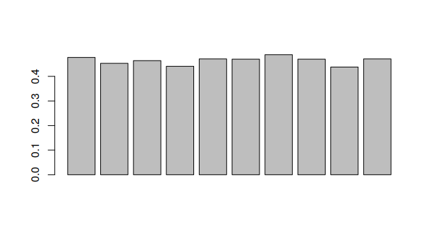
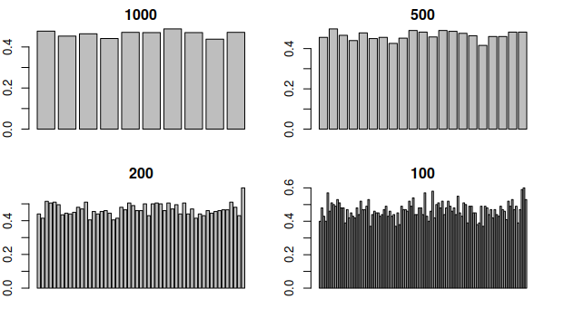

2.2.2 Subseries GC Content
In this course we will write functions to analyze the GC content of subsequences of a sequence. You can download the sequences right clicking the following link: dengue and choosing “Save as…”, saving in choose the Bioinformatics/workspace folder that is in the desktop, as always.
Before starting, load the data:
library(seqinr)
dengue <- read.fasta("dengue.fasta")[[1]]1 GC Content
In the last lecture we defined the GC content of a sequence manually, using the frequencies of G and C in the sequences. The library seqinr has a function that automatically calculates the GC content for any sequence.
> GC(dengue)
0.4666977We will use this function instead today.
2 Selecting windows
Different parts of the DNA strand behave differently. It is useful to be able to select subparts of it. For example, to select the first 10 nucleotides:
> dengue[1:10]
[1] "a" "g" "t" "t" "g" "t" "t" "a" "g" "t"To select n nucleotides, starting from the position s, the operation to be used is dengue[s,(s+n-1)].
3 Choosing some windows
Let’s analyze the data for two windows of size 100. We will get the GC content for each slice, and save it in an vector.
# Create and empty vector
gc <- c()
# Save the first element
gc[1] <- GC(dengue[1:100])
# Save the second element
gc[2] <- GC(dengue[101:200])Now we have a vector:
> gc
[1] 0.40 0.48Which we can plot with barplot(gc). But how can we do this for all intervals of a given size in a sequence?
4 Getting all the intervals
We want to obtain an array such as c(1,101,201,301...), corresponding to the start points for the intervals. but that is too long to write by hand. We will use instead the function seq(start,end,by=size) where start is the first element we want, end the last one, and size the size of the interval between elements.
In the example above, we want:
size(1,length(dengue)-100,by=100)5 Going through all the elements
To go through all the elements, we will use a for loop. For example, to print all the elements in the vector 1:100:
for(i in 1:100) {
print(i)
}6 Final result
Putting everything together, we can write a function that results into a vector containing the GC content of each piece of the sequence.
windowGC <- function(data, window) {
starts <- seq(1,length(data)-window,by=window)
gc <- c()
for(i in 1:length(starts)) {
start <- starts[i]
end <- start+window-1
gc[i] <- GC(data[start:end])
}
gc
}To calculate for windows of size 1000:
> windowGC(dengue,1000)
[1] 0.477 0.453 0.464 0.441 0.471 0.470 0.488 0.470 0.438 0.471
> barplot(windowGC(dengue,1000))
The function above can be used to compare different window sizes. By decreasing the window size, we can see the GC content with more resolution. Try generating each one of these graphs.

Looking at this graph, what part of the DNA would break first when heating it?